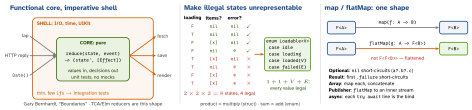

design · folio
In one line: Push decisions into pure functions over immutable values, push effects to a thin imperative shell, and use the type system (enums, smart constructors) so that illegal states cannot be written down. In Swift FP is a strong default, not a religion: local mutation of values is fine; the frameworks are object-oriented.
Download PDF Print view LaTeX source


How it works
- Pure function: same input → same output, no side effects (I/O, shared mutation, logging). Referential transparency: a call can be replaced by its value. Hidden inputs break it:
Date(),random,.shared, globals — pass them in. - Value semantics:
struct/enumcopy on assignment;Array/Dictionary/Stringare copy-on-write. Amutatingmethod on a local value is not impure — nobody else can see it. A struct holding a class reference has lost value semantics. - Algebraic data types: product (
struct, tuple: states multiply) and sum (enumwith associated values: states add). Exhaustiveswitchmakes the compiler find every site when a case is added. - Total function: defined for every input. Partial ones trap:
a[i],first!,Int(d)on.nan. Fix by widening the output (Optional/Result) or narrowing the input (aNonEmptytype). - Parse, don’t validate (Alexis King): a validator returns
Booland keeps the rawString— every layer re-checks or forgets. A parser/smart constructor returns a more precise type that is the proof:init?/throws init, then the rest of the code takesEmail, notString. - Higher-order functions take or return functions:
map,filter,reduce,compactMap, key paths as functions (users.map(\.name), Swift 5.2), retry/memoize wrappers. Composition:g(f(x)); custom operators cost readability. - Functor / monad in plain words:
maptransforms inside the box and keeps its shape (map(id)changes nothing; two maps = one map of the composition);flatMapchains a step that returns its own box and flattens; a way to put a value in the box (.some,.success,[x],Just) completes the monad.
Example — states and parsing
enum Loadable<Value> {
case idle, loading
case loaded(Value)
case failed(any Error)
}
func title(_ s: Loadable<[String]>) -> String { // total
switch s {
case .idle: return "Pull to refresh"
case .loading: return "Loading..."
case .loaded(let xs): return "\(xs.count) items"
case .failed(let e): return e.localizedDescription
}
}
struct Email: Hashable { // smart constructor
let value: String
init?(_ raw: String) {
let s = raw.lowercased()
guard s.split(separator: "@").count == 2 else { return nil }
value = s }
}
func invite(_ to: Email) {} // no raw String gets inDependencies as functions
struct UserClient { // a struct of closures
var fetchName: (Int) async throws -> String
}
extension UserClient {
static let mock = UserClient(fetchName: { _ in "Ada" })
}
final class ProfileModel {
let client: UserClient
init(client: UserClient) { self.client = client }
}
let model = ProfileModel(client: .mock) // no mock classSwap one closure per test — no protocol + mock class (Point-Free “protocol witness” style). Cost: no conformance checking, weaker discoverability, closures may capture self. Partial application pre-binds arguments.
Where FP stops paying in Swift
- Copies: writing to a shared CoW buffer copies all of it — O(n).
- Intermediates:
map.filter.maponArrayallocates per step —.lazyor a loop; appending inreduceis O(n²), usereduce(into:). - No guaranteed tail calls — deep recursion overflows; loop instead.
- Readability (operator soup) and OO frameworks (
UIView, delegates,NSManagedObject) — keep FP in the core.
Traps
compactMapdropsnils; sequenceflatMapflattens (split in Swift 4.1, SE-0187); onOptional/ResultflatMapis the bind.- Pure ≠ no
var: invisible local mutation is fine; a closure mutating a capturedvaris not. leton a class reference freezes the pointer, not the object.- “Loading with old items” can be a real state (pull-to-refresh) — model it (
case loading(previous: V?)), don’t reopen the optionals.